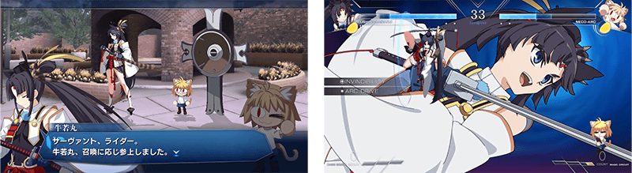
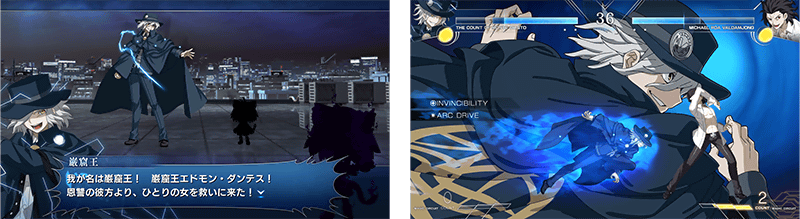
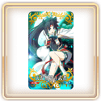
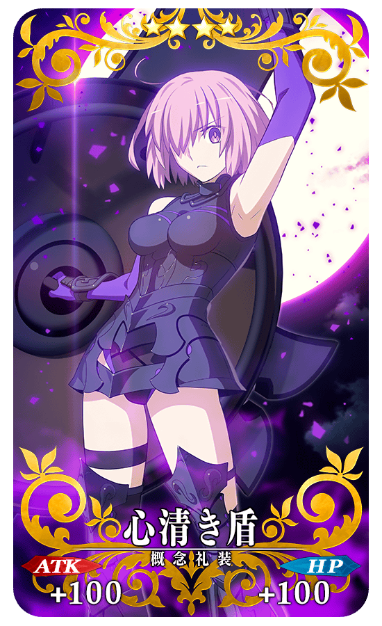
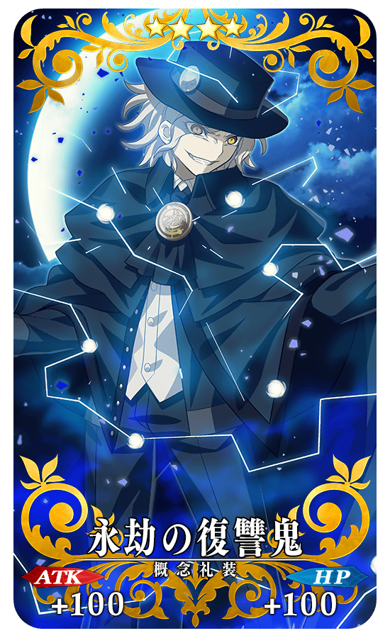
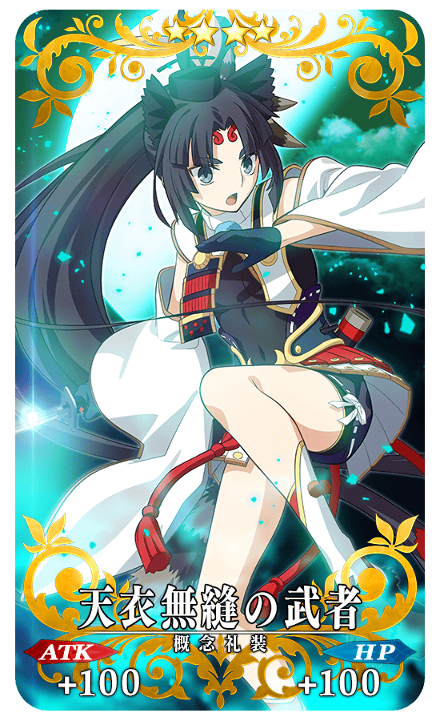
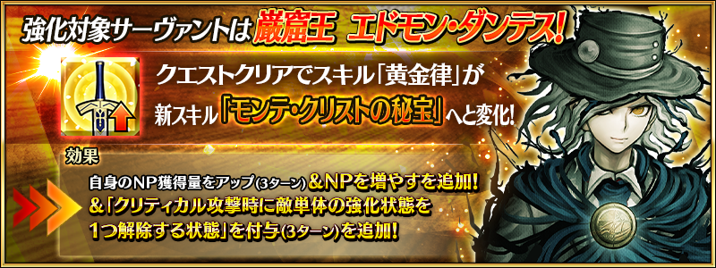
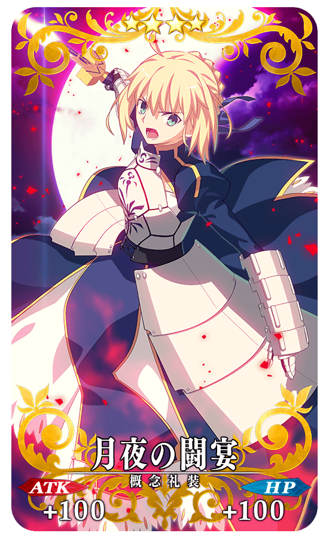
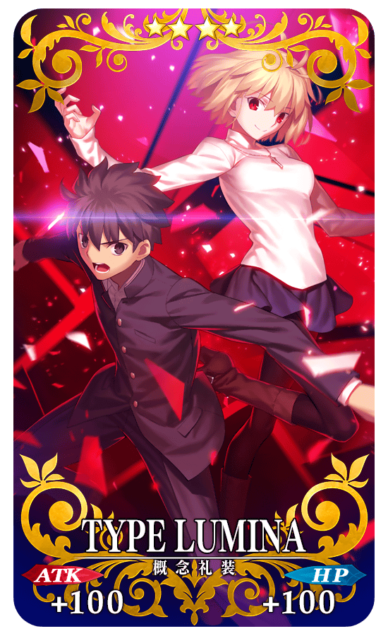

為了記念2D對戰格鬥遊戲「MELTY BLOOD: TYPE LUMINA」中，預定在2022年12月15日(四)配信的「牛若丸」「巖窟王」DLC，舉辦『「MELTY BLOOD: TYPE LUMINA」牛若丸＆巖窟王參戰記念宣傳活動』！
【12月12日(一) 17:00圖片更新】

※本頁面皆為開發中圖片。會有與實際圖片相異的情況。
◆舉辦期間◆
2022年12月12日(一) 3:00～12月19日(一) 2:59
「MELTY BLOOD: TYPE LUMINA」概要
【標題】
「MELTY BLOOD: TYPE LUMINA」(メルティブラッド：タイプルミナ)
【分類】
2D對戰格鬥
【對應機種】
PlayStation®4, Nintendo Switch️™, Xbox One, Steam
※未對應跨平台對戰。
【發售日】
自2021年9月30日(四)發售中
【価格】
普通版:7,480円 (含稅)、限定版:11,880円 (含稅)
【包含追加角色「牛若丸」「巖窟王」的更新實施日】
2022年12月15日(四) 13:00(預定)
【詳情在官方網站】
https://meltyblood.typelumina.com/


※開發中畫面。 ※使用PlayStation®4版畫面。 ©TYPE-MOON / Project LUMINA
從2D對戰格鬥遊戲「MELTY BLOOD: TYPE LUMINA」，介紹預定在2022年12月15日(四)配信預定的追加角色「牛若丸」「巖窟王」！
【牛若丸】
【巖窟王】
※開發中畫面。 ※使用PlayStation®4版畫面。 ©TYPE-MOON / Project LUMINA
為了記念「牛若丸」「巖窟王」參戰2D對戰格鬥遊戲「MELTY BLOOD: TYPE LUMINA」，實施特別的登入獎勵。
在下述期間中登入3次(1天算1次)的話，最多贈送參戰記念概念禮裝3種與星見茶壺6個！
◆舉辦期間◆
2022年12月12日(一) 3:00～12月19日(一) 2:59
※在舉辦期間內合計登入3天的話，可領取所有的登入獎勵。
◆贈送對象◆
2022年12月18日(日) 2:59前通過「特異點F 炎上汙染都市 冬木」的御主對象
※上述時間前，在管理室(ターミナル)畫面的關卡橫幅必須要有「CLEAR」的文字顯示。
◆登入獎勵內容◆
| 登入次數 | 贈送內容 | |
|---|---|---|
| 第1次 | ★4(SR)心清き盾 1張 | |

|
星見茶壺 2個 | |
| 第2次 | ★4(SR)永劫の復讐鬼 1張 | |
|
|
星見茶壺 2個 | |
| 第3次 |  | ★4(SR)天衣無縫の武者 1張 |
|
|
星見茶壺 2個 | |
※登入獎勵會在每天3:00配發。 ※合計3天內能領取，但根據成為贈送對象的時間點，可能無法到此上限。 ※在登入獎勵入手的限定概念禮裝的等級會是最大。
◆「星見茶壺」使用期限◆
2022年12月12日(一) 3:00～12月31日(六) 22:59
※「星見茶壺」有使用期限，超過使用期限「星見茶壺」會消失，敬請注意。
◆「MELTY BLOOD: TYPE LUMINA」牛若丸＆巖窟王參戰記念特別登入獎勵限定概念禮裝◆
|  |
★★★★SR |
|  |
★★★★SR |
|  |
★★★★SR |
下述的期間中，在進行強化『「MELTY BLOOD: TYPE LUMINA」牛若丸＆巖窟王參戰記念宣傳活動』關聯從者時，大成功(經驗值2倍加成)・極大成功(經驗值3倍加成)的發生率以期間限定變成2倍！
務必藉此機會強化對象從者吧！
◆舉辦期間◆
2022年12月12日(一) 17:00～12月17日(六) 11:59
【對象從者】
| 職階 | 稀有度 | 從者名 | |
|---|---|---|---|
| Saber | ★★★★★ | 阿爾托莉亞・潘德拉剛 | |
| Rider | ★★★ | 牛若丸 | |
| Avenger | ★★★★★ |
|
巖窟王 |
| Shielder | ★★★ | 瑪修・基利艾拉特 | |
在『「Lostbelt No.7」開幕前主線關卡通過聲援宣傳活動 第1彈』，『通過第2部 第6章「序幕 序」的御主』做為對象的「強化大成功・極大成功率2倍」在2022年11月23日(三) 17:00～12月31日(六) 22:59的期間舉辦。
就算在『「Lostbelt No.7」開幕前主線關卡通過聲援宣傳活動 第1彈』與『「MELTY BLOOD: TYPE LUMINA」牛若丸＆巖窟王參戰記念宣傳活動』雙方宣傳活動中成為「強化大成功・極大成功率2倍」對象的情況，效果不會重複，強化大成功・極大成功率仍是2倍。

【12月12日(一) 17:00追記】
「★5(SSR)巖窟王 愛德蒙・唐泰斯」強化的特別關卡「從者強化關卡」，在迦勒底之門永久追加。
不僅進行對象從者的強化，也可獲得聖晶石做為關卡通過報酬。
※請注意在從者強化關卡沒有文字冒險部份。
◆追加時間◆
2022年12月12日(一) 17:00～
◆開放條件◆
持有的強化對象從者，必須使其最終再臨。
※未持有對象從者的話，不會出現關卡。
※關卡沒有舉辦期限。

『「MELTY BLOOD: TYPE LUMINA」Saber參戰記念關卡』『「MELTY BLOOD: TYPE LUMINA」瑪修參戰記念關卡』的關卡開放權在達文西工房的「稀有稜鏡交換」永久追加。
通過2個『「MELTY BLOOD: TYPE LUMINA」參戰記念關卡』，得到關卡限定的概念禮裝吧！
另外，各關卡開頭會播放「MELTY BLOOD: TYPE LUMINA」的「Saber」、「瑪修・基利艾拉特」影片。
滿足下述的交換條件，才能在達文西工房的「稀有稜鏡交換」交換。
◆交換條件◆
滿足以下條件的御主才能交換
【『「MELTY BLOOD: TYPE LUMINA」Saber參戰記念關卡』關卡開放權】
・通過「特異點F 炎上汙染都市 冬木」
・未通過『「MELTY BLOOD: TYPE LUMINA」Saber參戰記念關卡』
【『「MELTY BLOOD: TYPE LUMINA」瑪修參戰記念關卡』關卡開放權】
・通過「特異點F 炎上汙染都市 冬木」
・未通過『「MELTY BLOOD: TYPE LUMINA」瑪修參戰記念關卡』
◆追加時間◆
2022年12月12日(一) 17:00～
◆追加道具(永久)◆
| 追加道具 | 能交換次數 | 1次交換所需的 稀有稜鏡數 |
|---|---|---|
| 『「MELTY BLOOD: TYPE LUMINA」Saber參戰記念關卡』關卡開放權 | 1次 | 3個 |
| 『「MELTY BLOOD: TYPE LUMINA」瑪修參戰記念關卡』關卡開放權 | 1次 | 3個 |
※在「稀有稜鏡交換」追加的『「MELTY BLOOD: TYPE LUMINA」Saber參戰記念關卡』關卡開放權、『「MELTY BLOOD: TYPE LUMINA」瑪修參戰記念關卡』的關卡開放權為永久，沒有交換期限。 ※關於已經通過交換對象關卡的玩家，剩餘次數的顯示會是「0次」，無法交換。 ※在關卡通過入手的限定概念禮裝的等級會是最大。 ※請注意在『「MELTY BLOOD: TYPE LUMINA」Saber參戰記念關卡』、『「MELTY BLOOD: TYPE LUMINA」瑪修參戰記念關卡』沒有文字冒險部份。 ※在關卡開始時必須下載資料。 ※觀看影片後也不會登錄到圖鑑(マテリアル)，敬請注意。 ※使用行動網路的情況，敬請注意流量限制。 ※本影片會有根據使用裝置的音量設定讓一部份演出以大音量播放的情況。請事先確認使用裝置的音量來享受。
◆『「MELTY BLOOD: TYPE LUMINA」Saber參戰記念關卡』限定概念禮裝◆
|  |
★★★★SR |
◆『「MELTY BLOOD: TYPE LUMINA」瑪修參戰記念關卡』限定概念禮裝◆
|  |
★★★★SR |
其他還有，期間限定『「MELTY BLOOD: TYPE LUMINA」新從者參戰記念 阿爾托莉亞・潘德拉剛(Saber)Pick Up召喚』的情報公開中！
關於詳情，請自下述橫幅確認。
■『「MELTY BLOOD: TYPE LUMINA」新從者參戰記念 阿爾托莉亞・潘德拉剛(Saber)Pick Up召喚』詳細情報